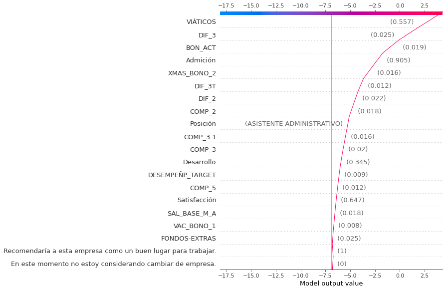

Clusterización utilizando UMAP

Influencia de las Variables en Modelo predictivo de Status
Influencia Sobre la predicción de Altas
Influencia Sobre la predicción de Bajas
Influencia Sobre la predicción de Posibles Bajas
Ejemplo Altas Individual
Ejemplo Bajas Individual
Ejemplo Posibles Bajas Individual
Distribución de Altas
Distribución de Bajas
Distribución de Posibles Bajas
Diagrama de Flujo sobre las variables más influyentes
Digrama de Sankey